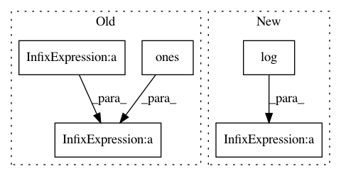

456b9ed099cc5f7e99880371ac9d1924095769f3,GPflow/transforms.py,Log1pe,backward,#Log1pe#Any#,139
Before Change
return -tf.reduce_sum(tf.log(1. + tf.exp(-x)))
def backward(self, y):
result = np.log(np.exp(y - self._lower) - np.ones(1, np_float_type))
return np.where(y > 35, y-self._lower, result)
def __str__(self):
After Change
def backward(self, y):
ys = np.maximum(y-self._lower, np.finfo(np_float_type).eps)
return ys + np.log(-np.expm1(-ys))
def __str__(self):
return "+ve"
In pattern: SUPERPATTERN
Frequency: 3
Non-data size: 5
Instances
Project Name: GPflow/GPflow
Commit Name: 456b9ed099cc5f7e99880371ac9d1924095769f3
Time: 2017-05-26
Author: joachim.vanderherten@ugent.be
File Name: GPflow/transforms.py
Class Name: Log1pe
Method Name: backward
Project Name: leftthomas/SRGAN
Commit Name: e7a02b6293100e21ef15870fd0f9069beaae5290
Time: 2017-12-02
Author: leftthomas@qq.com
File Name: train.py
Class Name:
Method Name:
Project Name: rusty1s/pytorch_geometric
Commit Name: 45a03ac258234ba49c0a43d46ae022493190591e
Time: 2019-03-26
Author: matthias.fey@tu-dortmund.de
File Name: torch_geometric/nn/models/autoencoder.py
Class Name: ARGA
Method Name: discriminator_loss